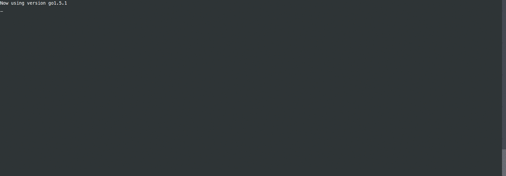

Capitan
Capitan is a tool for managing multiple Docker containers based largely on crowdr
Capitan is only a wrapper around the docker cli tool, no api usage whatsoever (well... an inspect command here and there).
This means it will basically work with all versions of docker.

Commands
Invasive commands
-
capitan upCreate then run or update containers- Recreates if:
- If newer image is found it will remove the old container and run a new one
- Container config has changed
Starts stopped containers
Optionally can attach to output using
--attach|-aflag.
- Recreates if:
-
capitan startStart stopped containers- Optionally can attach to output using
--attach|-aflag.
- Optionally can attach to output using
-
capitan restartRestart containers- Further arguments passed through to docker, example
capitan start -t 5
- Further arguments passed through to docker, example
-
capitan stopStop running containers- Further arguments passed through to docker, example
capitan stop -t 5
- Further arguments passed through to docker, example
-
capitan killKill running containers using SIGKILL or a specified signal- Further arguments passed through to docker, example
capitan kill --signal KILL
- Further arguments passed through to docker, example
-
capitan rmRemove stopped containers- Further arguments passed through to docker, example
capitan rm -f
- Further arguments passed through to docker, example
Non invasive commands
-
capitan psShow container status- Further arguments passed through to docker, example
capitan ps -a
- Further arguments passed through to docker, example
capitan ipShow container ip addressescapitan logsFollow container logscapitan pullPull images for all containerscapitan buildBuild any containers with 'build' flag set (WIP)
Why...
...not docker-compose?
- lack of variables
- options support is always behind actual docker version
- up restarts containers in wrong order
- no hooks system
- hassle free replacement for non x86/x86_64 architectures
...not crowdr?
Written totally in bash. I love bash but I personally feel safer with go. That is all.
Capitan Features
- Shell Support - Config is read from stdout of a shell command. Extremely flexible
- Hooks - hooks for before and after every intrusive action
- Predictable run sequence - containers started in order defined
- Future proof - options are passed through on most commands to docker cli, very simple.
Configuration
Global options
--cmd, -c "./capitan.cfg.sh" command used to obtain config
--debug, -d print extra log messages
--dry-run, --dry preview outcome, no changes will be made
--help, -h show help
--version, -v print the version
Config file/output
Service config is read from stdout of the command defined with --cmd .
capitan by default runs the command ./capitan.cfg.sh in the current directory to get the config. This can be customized with -c flag.
You could use any command which generates a valid config. It doesn't have to be a bash script like in the example or default.
The output format must be:
CONTAINER_NAME COMMAND [ARGS...]
All commands are passed through to docker cli as --COMMAND EXCEPT the following:
build
This allows a path to be given for a dockerfile.
hook
Allows for a custom shell command to be evaluated at the following points:
- Before/After Run (
before.run,after.run)- This occurs during the
upcommand
- This occurs during the
- Before/After Start (
before.start,after.start)- This will occur in the
up,startandrestartcommand
- This will occur in the
- Before/After Stop (
before.stop,after.stop)- This will occur in the
stopcommand only
- This will occur in the
- Before/After Kill (
before.kill,after.kill)- This will occur in the
killcommand only
- This will occur in the
- Before/After Rm (
before.rm,after.rm)- This will occur in the
upandrmcommand
- This will occur in the
NOTE hooks do not conform exactly to each command. Example: an up command may rm and then run a container OR just start a stopped container.
global project
The project name, defaults to current working directory
global project_sep
String to use to create container name from project and name specified in config
Example Config :
#!/bin/bash
PREFIX=dev
cat <<EOF
#
# General redis container
#
redis image redis:latest
redis hostname ${PREFIX}_redis
redis publish 6379
redis hook after.run sleep 10
redis hook after.start sleep 10
#
# General mongodb container
#
mongo image mongo:latest
mongo command mongod --smallfiles
mongo hostname ${PREFIX}_mongo
mongo publish 27017
#
# My app
#
app build ./
app publish 80
app link redis
app link mongo:mongodb
EOF
Roadmap
- Tests
- Scaling (multiple instances of same container)
- More efficient
uplogic - Helpful aliases in shell env.
- More flexible
buildcommand